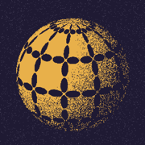
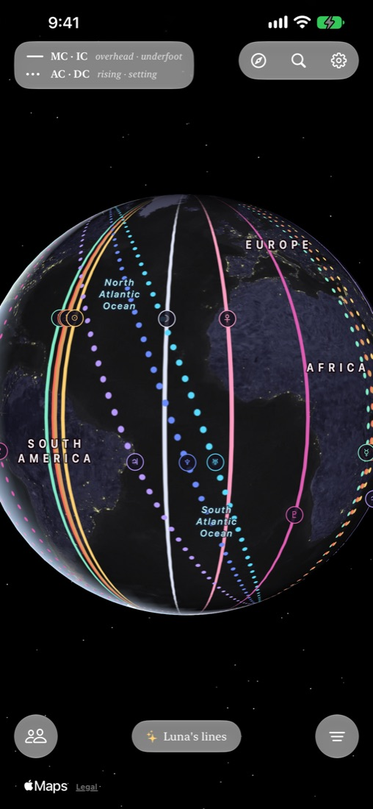
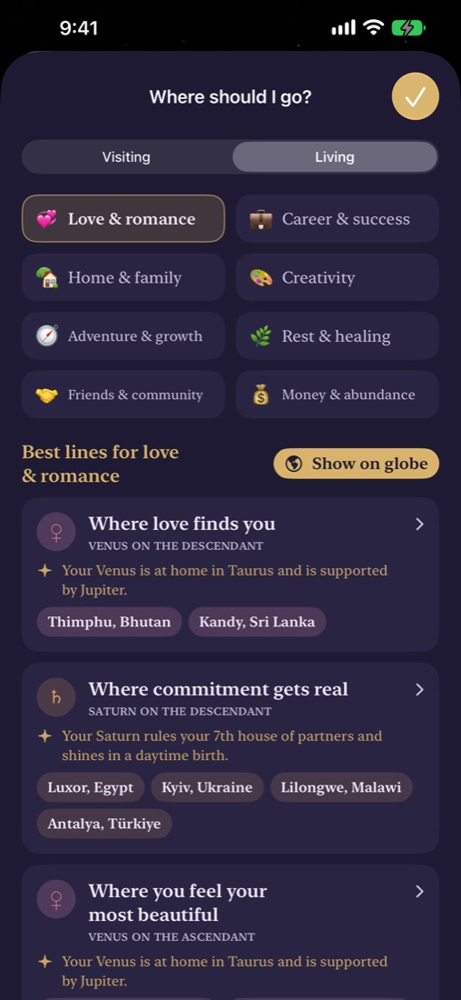
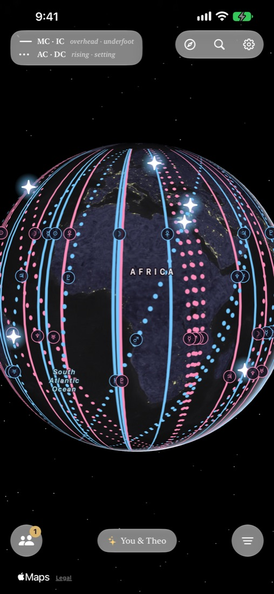
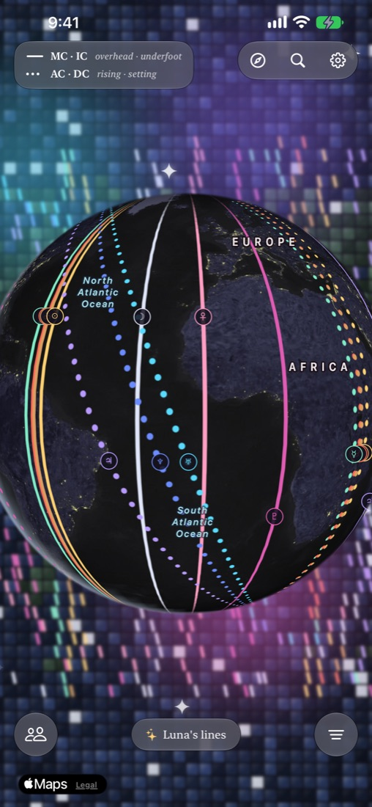
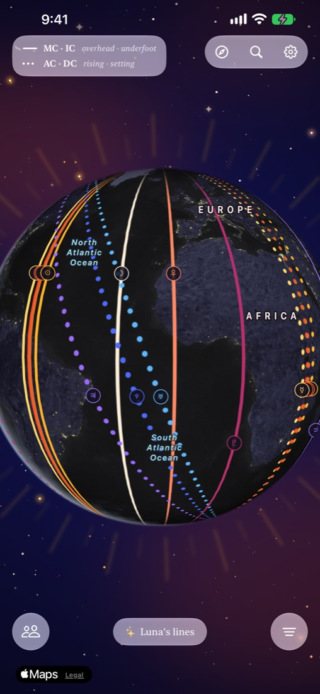
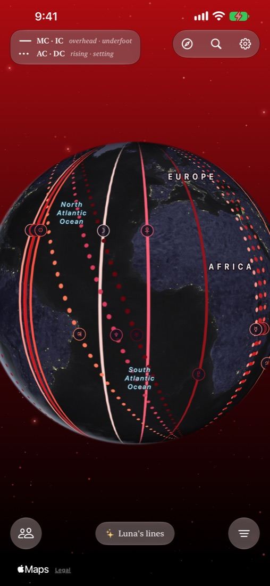
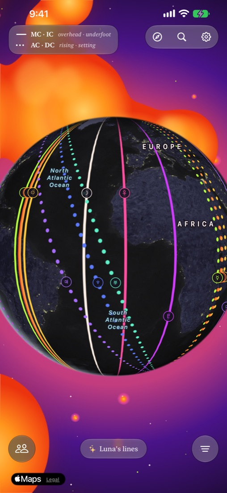
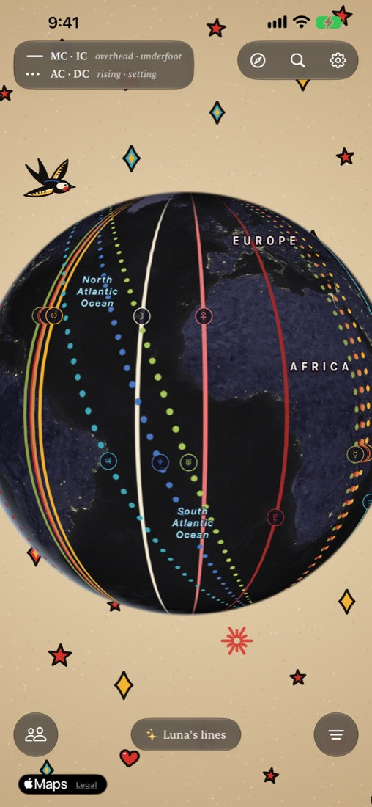
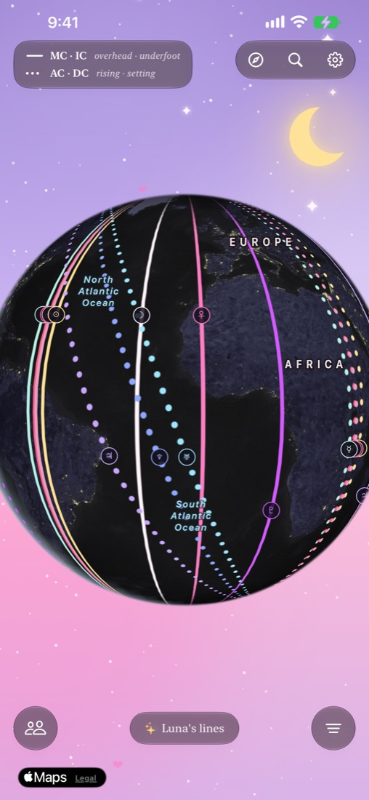

MeridiaFind where on Earth you shine.
Meridia maps your birth chart across the world, so you can see where love, work and adventure come most naturally to you.
For iPhone. Free while in beta.
What is astrocartography?
At the moment you were born, every planet sat somewhere in the sky. Somewhere on Earth, each one was just rising over the horizon, somewhere it was setting, somewhere it was right overhead, and somewhere it was directly underfoot.
Astrocartography draws those places as lines across the globe. Astrologers say a planet's energy feels strongest near its lines: near your Venus line, love and beauty come easily; near Jupiter, luck and growth. It's a gentle way to ask why some places feel like home the moment you arrive.
How it works
Enter your birth details. Your date, time and place of birth. Everything stays on your iPhone.
Watch your lines appear. Each planet draws lines across the globe where it was rising, setting, overhead or underfoot when you were born.
Find where to go. Tap any line or place to read what it brings, or ask Meridia for your best places.

Your whole sky, on the whole world
Solid lines show where a planet was overhead or underfoot. Dotted lines show where it was rising or setting. Spin the globe, tap a line, and read what that planet brings to the places near it.

Where should I go?
Pick what you're looking for (love, career, home, creativity, adventure, rest) and whether you're visiting or moving. Meridia finds your best lines for it, with real places along each one.

Meet in the stars
Add a partner, friend or family member and see both of your maps at once. Glowing stars mark the places where your lines cross, the spots you might share something special.
Make it yours
Every theme changes the sky around your globe and the colors of your lines.






Questions
Is Meridia free?
Yes, Meridia is free while it's in beta.
Is my information private?
Your birth details and your people stay on your iPhone. There are no accounts, no ads and no tracking. Read the privacy policy.
Do I need my exact birth time?
It helps a lot, since four minutes moves a line about 100 km. If you only know roughly when you were born, Meridia shows soft bands covering everywhere your lines could be. Comparing with friends needs exact times for both of you.
Is it on Android?
Not yet. Meridia is made for iPhone.
Where can I get help?
Visit Support or email meridia.support@gmail.com.